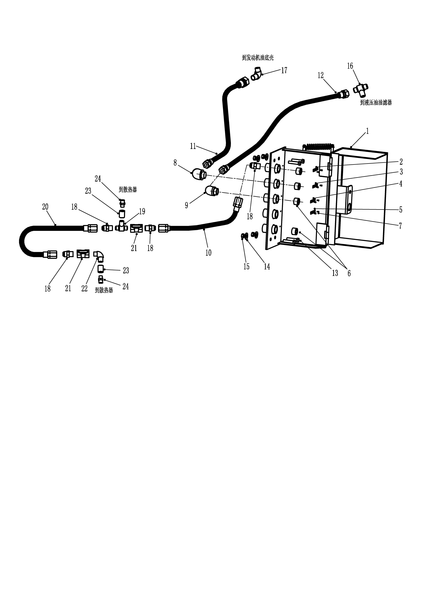

集中充注. · CENTRAL SERVICE ASSY
Установка системы централизованного заполнения
Общие сведения
Централизованное заполнение представляет собой набор серии шлангов и сопутствующих аксессуаров, используется х для заполнения гидравлического бака, водяного бака, масляного поддона двигателя и других устройств на транспортном средстве. Быстросъемные соединители и специальные аксессуары устанавливаются централизованно на защитных кожухах на левой передней или правой передней стороне рамы на карьерном самосвале.
Управление
При заполнении необходимо внешнее устройство заполнения, такое как соединители и разъемы, совместимые с системой. Обычно клиент конфигурирует систему в соответствии с привычками использования. (Пожалуйста, свяжитесь с , чтобы определить спецификации соединителей с NHL при выборе.)
Система может заполнить и слить моторное масло и охлаждающую жидкость, гидравлическое масло и смазку, также заполнить смазку в автоматическую систему смазки.
Каждый соединитель заполнения имеет разные размеры и типы, и на заливочном отверстии имеется четкая метка заполнения, чтобы уменьшить возможность ошибочного заполнения жидкости.
Уход и техническое обслуживание
Регулярное техническое обслуживание системы должно включать следующие шаги:
1. Остановить карьерный самосвал в безопасном месте, кроме использования фрикционной системы торможения, еще нужно подложить клинья под колеса.
2. Перед началом использования необходимо очистить как старый, так и новый соединитель централизованного заполнения, а после каждого использования – сразу надеть подходящий кран или крышку.
3. Внешнее заполняющее устройство должно регулярно проверяться на наличие хорошей посадки и признаков повреждения или утечки. По мере необходимости отремонтировать или замените.
4. Проверить узлы и детали шлангов на наличие признаков скручивания, повреждения, износа или других проблем. По мере необходимости отремонтировать или замените.
5. Открыть шаровой клапан на трубопроводе перед заполнением охлаждающей жидкости. После заполнения закрыть шаровой клапан
Вспомогательная система - система централизованного заполнения
100-0030
2
3
Вспомогательная система - система централизованного заполнения
100-0030
1
Дополнения - Масса компонентов
200-0090
К радиатору
К радиатору
К фильтру гидравлического масла
К поддону двигателя
Спецификация1. Кожух6. Хомут11. Винт16. Р-Зажим21. Отвод26. Прямой Разъём2. Труба Для Заливки Масла7. Болт12. Табличка С Охлаждающей Жидкостью17. Болт22. Шаровой Клапан27. Отвод3. Трубка Для Заливки Гидромасла8. Самозаблокирующая Гайка13. Табличка Со Смазкой18. Пружинная Шайба23. Соединение4. Трубка Для Заливки Охлаждающей Жидкостью9. Плоская Шайба14. Табличка С Гидравлическим Маслом19. Болт24. Отвод5. Трубка Для Заливки Охлаждающей Жидкости10. Винтовая Пробка15. Масляная Табличка20. Кронштейн25. ОтводРис.1 Установка системы централизованного заполнения
Спецификация1Защитный кожух7Винт13Болт19Тройник2Паспортная табличка8Соединитель14Шайба20Шланг в сборе3Паспортная табличка9Соединитель15Гайка21Отсечной клапан4Паспортная табличка10Шланг в сборе16Тройник22Соединитель5Паспортная табличка11Шланг в сборе17Штуцер23Штуцер6Резьбовая пробка12Шланг в сборе18Штуцер24Штуцер
Рис.1 Установка системы централизованного заполнения
Иллюстрации
